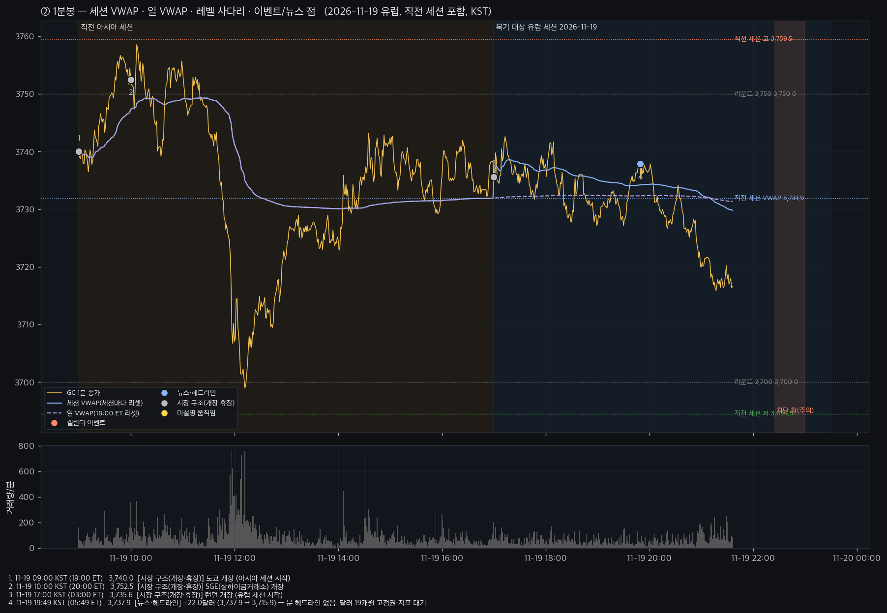
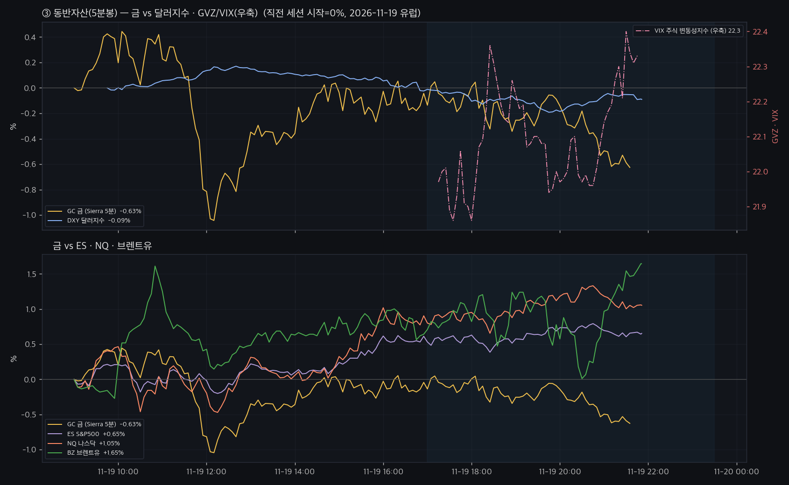
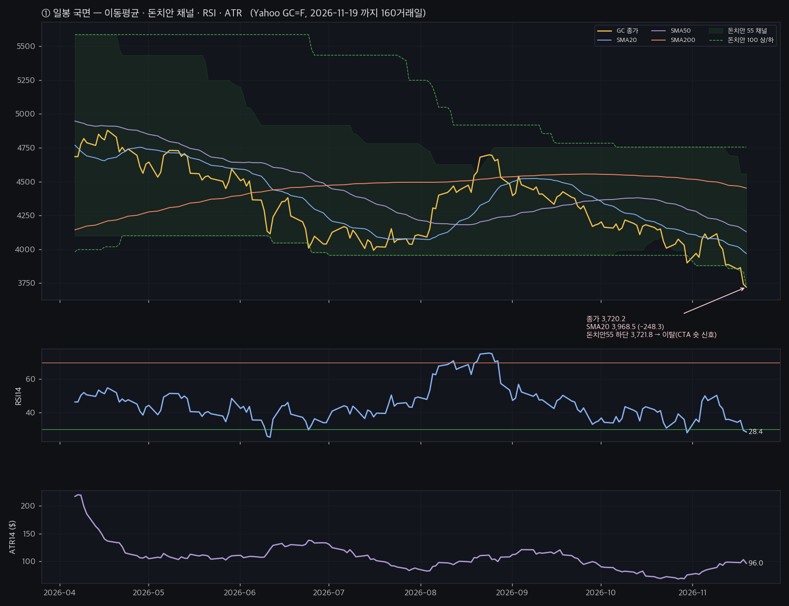

2026-11-19 유럽 세션 복기 (03:00~09:30 ET / 17:00~23:30 KST)
작성 22:05 KST · 부분 복기(~21:36 KST) · 틱 GC_2026-11-19.p2150.ok window_utc 06:07~12:45 · bars_in_window 390 · 마지막 봉 12:36 UTC(Coordinated Universal Time, 협정 세계시) · written_kst 21:48:16 · rewinds_in_window 1 · 세션 277봉 · 꼬리(21:37~23:30, 22:30 청구·Philly·Lagarde·22:50 Hammack)는 11-20 07:20 미국 복기 ⓪ · 예측: 2026-11-19_유럽
전 구간 보충 (11-20 15:45 KST, 틱 390봉 — 숫자 추가만, 본문 불변)
고저 37.2달러(0.995%, p25 0.9~p75 1.5 ✓ 로 전환) · 종−시 −27.1 · 저 3,706.6 @09:22 ET · 고 3,743.8 · 22:30 청구 203K(컨센 197K) +Philly 6.3 → 5분 고저 10.1달러(p90 18.3 안 ✓, 방향 무방향 문턱 안) · 22:50 Hammack 창 1분 최대 4.0 · 점수 0.333 → 0.75 (점수.csv 갱신). 미국 세션 전체는 2026-11-19_미국.
■ 그림 — 세션 지도

점 번호 = 타임라인 행·그림 아래 목록.
■ 점수 0.333 (부분) — range 0 · dir 0 · alerts 2/2 (등급 이벤트 22:30 은 꼬리 → 3항 평균)
| 항목 | 예측 | 실측 (틱 277봉, ~21:36 KST) | 판정 |
|---|
| 고저폭 | 53.3달러 (p25 40.3 / p75 73.6) = 1.2% | 29.4달러 = 0.79% (고 3,743.8 @17:13 → 저 3,714.4 @21:15 KST) | p25 아래 ✗ · 오차 −23.9달러 (22:30 전 구간) |
| 가격대 | 박스 3,712.0 ~ 3,757.8 | 시가 3,738.4 기준 위 +5.4 / 아래 −24.0달러 | 박스 안 |
| 방향 | 상 50% · 종가−시가 0달러 | 하락 종가−시가 −21.8달러 (−0.58%) | ✗ · 오차 −21.8달러 |
| 이벤트 | 22:30 청구 5분 8.9 / p90 18.3달러 | (꼬리) | 미채점 |
| 주의 시각 | 17:00 개장 · 18:00~20:00 (22:30·22:50 꼬리) | 창 안 최대 1분 고저 4.4 · 5.3달러 vs 1분 p90(과거 90%가 이 이하) 2.6달러 | 2/2 |
| 킬스위치 | 5분 고저 ≥ 15.9달러 / 거래량 ≥ 2,175계약 | 최대 5분 8.4달러 · 발동 없음 | — |
계산 · 실측 출처
- 계산: (0 + 0 + 2/2) / 3 = 0.333 (잠정). 22:30·22:50 창과 청구 이벤트는 꼬리 보충 때 분모에 더한다.
- 실측 출처:
GC_2026-11-19.csv 08:00~12:36 UTC → session_actuals.py(--buckets 0-60,60-180,180-300,300-) · gold_session_moves.py · gold_session_driver_decomp.py(캐시 데이터/companion_1m/2026-11-19_eu). gold_event_occurrence_append.py: 새 행 0(22:30 이벤트는 봉 범위 밖).
- 구간(고저 · 종−시, 달러): 17:00~18:00 12.7 · −0.9 / 18:00~20:00 16.1 · −0.7 / 20:00~21:36 23.7 · −20.4.
■ 핵심 메시지
1. D 박스는 4시간 지켜졌고(17:00~20:56), 3,721.8 이탈은 20:57 KST — 22:30 지표 1시간 반 전 B 가 먼저 켜짐
- B 21:00 KST 15분 종가 3,720.1 로 발동 → 저 3,714.4(21:15), 목표 3,697 은 17.4달러 남음, 무효 3,732 미도달(~21:36).
2. 박스 구간 DXY(US Dollar Index, 달러 인덱스(주요 6통화 대비 달러 가치)) −0.19% 에도 금 +2.3달러, 하락 다리 DXY +0.15% 에 금 −22.0달러 — 달러에 비대칭 반응
- 하락 다리 달러 몫 ≈−9.9달러(45%), 금리 몫 ≈−1.6달러(10년 +1.8bp), 은 −0.74%. 반등엔 안 쓰고 약세엔 쓰는 국면.
3. 고저폭 29.4달러 = 22:30 전 구간 p25(40.3) 아래 — 원장 #31 둘째 조건(지표 전 구간 p25) ✓
- 전일 ≥2% 조건부 중앙 53.3 은 22:30 지표 반응을 포함한 값. 지표 전 부분 복기 채점은 구조적으로 p25 쪽.
■ 움직임 타임라인 (틱, 전환 임계 8.0달러)
움직임 타임라인 — 1건(임계 이상), 미설명 0건
| # | 시작 KST (ET) | 지속 (분) | 움직임 (달러) | 가격 → 가격 | 거래량 (배수) | 촉발 1분 KST | 상태 |
|---|
| 3 | 19:49 (05:49) | 88 | −22.0 | 3,737.9 → 3,715.9 | 1.2배 | 21:15 (07:15 ET, 245계약) | 추세형(첫 5분 −0.1) · 달러·금리 경로 |
그 앞 17:00~19:49 은 3,726.3~3,743.8 박스(임계 미만 소폭 왕복).
■ 원인 추적 — 미설명 0건 (R1 1분 5.3달러 04:10 ET 는 박스 안 왕복)
원인 추적
| 행 | 촉발 ET | 헤드라인·캘린더 밖 이벤트 | 동반 자산 같은 다리 (DXY % · 10년 bp · 은 % · ES(E-mini S&P 500 futures, S&P500 미니 선물) % · 브렌트 %) | 원인 분류 | 교과서 고리 |
|---|
| 3 | 05:49~07:15 | 분 헤드라인 없음. 달러 19개월 고점권·지표 대기(economies.com · Reuters/Fidelity) | +0.15 · +1.8 · −0.74 · −0.09 · +0.54 | 달러 경로(45%) + 지표 전 포지션 정리 | 작동(달러·금리↑ → 금↓) |
■ 동반 자산 · 경로 분해
세션 변화 −19.2달러(Yahoo 창) 중 달러 몫 +3달러 · 하락 다리 달러 몫 −9.9 / −22.0달러
- 7일 β(DXY 1% 상승당 금 %) −1.76. 세션 DXY −0.05% · 10년 ≈+2.9bp · 은 −0.72% · ES +0.06% · 브렌트 +0.89%.
- 5분 r(동시 상관, −1~+1): 금~은 +0.85 · 금~DXY −0.54, 선행 없음(lag+1 −0.08).
- 결론: 박스 다리는 달러 −0.19% 를 무시(금 +0.06%), 하락 다리는 달러·금리를 그대로 탐 — 약세 국면의 비대칭.

5분봉, 위 금 vs 달러지수 · 아래 금 vs ES·NQ(E-mini Nasdaq-100 futures, 나스닥100 선물)·브렌트.
■ 교훈 → 학습원장
이번 복기가 원장에 남긴 것
- 검증한 기존 교훈: #7 ✓(시가 3,738.4 가 경계 밖 → D 기본, 4시간 유지) · #31 ✓(22:30 전 고저폭 p25 아래) · #36 해당 없음(역풍 2) — 그러나 종−시 −21.8 ≈ p25 −23.2 · #4·#10 해당 없음/꼬리
- 새 교훈 행: #38 — 신저가 ≥4일 국면 유럽에서 22:30 지표 전 DXY 하락에도 금이 박스 상단(FVG(Fair Value Gap, 미체결 가격 공백))을 못 넘으면 방향을 0.05 이상 하락 쪽으로, B 를 지표 전 발동 가능으로 둔다(11-19 20:57 이탈)
- 예측기록 채움: 10건 (hit 0 / miss 4 / na 6 — 이벤트 2·B 진행 중은 꼬리)
■ 시나리오 · 레벨 · 이벤트 매트릭스 채점
발동한 시나리오: B — 21:00 KST 15분 종가 3,720.1(3,721.8 아래), 목표 3,697 미도달(저 3,714.4) · 무효 3,732 미도달 (~21:36 진행 중) · A 미발동 · D 20:57 붕괴
| 레벨 | 가격 | 실제 반응 | 시각 KST | 판정 |
|---|
| (b) FVG 약세 3,735.8~3,746.3 | 3,741.1 | 고 3,743.8 진입 → 거절 | 17:13 | 지켜짐 |
| 라운드 3,750 | 3,750 | 6.2달러 앞 | — | 미도달 |
| 일 VWAP(Volume-Weighted Average Price, 거래량가중평균가격) | 3,732.2 | 18:00~20:00 15분 종가 3,727.2~3,736.7 왕복 | — | 자석(판정 제외) |
| 전일 저(14개월 저) | 3,721.8 | 이탈 | 20:57 | 뚫림 |
| (b) FVG 강세 3,715.5~3,720.9 | 3,718.2 | 3,714.4 스윕 → 3,720 회복 | 21:15 | 스윕 후 회복 |
(b) 레벨 반응 2/2. (a) 지지·저항 0/1(3,721.8 뚫림, 3,750 미도달).
| 이벤트 | 실제치 vs 컨센 | 매트릭스 예측 | 실제 5분 | 적중 |
|---|
| 청구·Philly 22:30 | (꼬리) | ±15K / ±17.9pt | (꼬리) | 미채점 |
■ 이벤트별 예측 vs 실측
| 이벤트 | 등급 | 예측 5분 중앙 / p90 (달러, 과거 56건) | 실측 | 컨센 vs 실제 | 판정 |
|---|
| US 실업수당 청구 22:30 | 주의 | 8.9 / 18.3 | 창 밖(꼬리) | 198K vs (꼬리) | 미채점 — 2026-11-19 |
■ 일봉 국면 (그림)

■ 빗나간 이유 (원인 A~H)
| 빗나간 것 | 원인 | 한 줄 |
|---|
| 고저폭 p25 아래 | H | 지표 포함 조건부 중앙을 지표 전 부분 창에 그대로 비교(#31 둘째 조건 미적용) |
| 방향 50% | H | 박스 상단 FVG 거절·달러 비대칭을 확률에 안 넣음 |
| D 22:15 까지 | H | 지표 전 B 발동 가능성을 D 에 묶어 둠 |
복기 검색 (01_뉴스 채널 §4-4) — 켜진 트리거 R1·R5, 2쿼리 / 0페이지
| 트리거 | 판정 | 알게 된 것 / 적은 곳 |
|---|
| R1 | 발화(1분 5.3 ≥ p90 2.6, 04:10 ET, ±5분 이벤트 없음) | 박스 안 왕복 — 원인 검색 대상 아님, 01 §5 기록 |
| R5 | 발화(고저폭 p25 아래) | 지표 대기·달러 19개월 고점권(gold-eagle) |
search_used R1:발화/부분;R5:발화/적중. 데이터 축적: 가족 없는 이벤트 0건.
■ 개선 제안 (규칙표 수정 후보 — 월간 갱신 때 판단)
- 유럽 부분 복기의 고저폭 채점을 '22:30 전 구간 분포'(#31) 로 — 지표 포함 중앙과 비교하면 늘 p25 쪽. 사례 3건째(11-16·11-17·11-19).
- 원장 #38 — 지표 전 FVG 거절 + 달러 비대칭이면 B 기본. 사례 1건.
- #36 조건(역풍 ≥3)을 역풍 ≥2 로 완화 검토 — 11-19 유럽 종−시 −21.8 ≈ p25.
■ 미확인
못 확인한 것 3건 — 꼬리 21:37~23:30 · Hammack·Lagarde 주제 · 07:15 ET 촉발 분 헤드라인
출처·파일